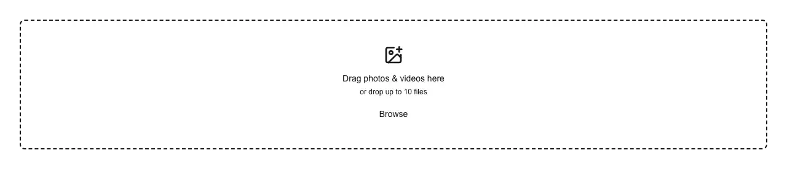

Rendered on the shadcn default neutral palette with harness-generated props.
pnpm dlx shadcn@4.21.0 add @ilinxa/carousel-composer
| licence | ASSET |
|---|---|
| primitive base | none |
| type | registry:block |
| files | src/components/carousel-composer/carousel-composer.tsxsrc/components/carousel-composer/index.tssrc/components/carousel-composer/types.tssrc/components/carousel-composer/hooks/use-carousel-state.tssrc/components/carousel-composer/hooks/use-controllable-state.tssrc/components/carousel-composer/lib/aspect.tssrc/components/carousel-composer/lib/clamp-sources.tssrc/components/carousel-composer/lib/file-intake.tssrc/components/carousel-composer/lib/validate-media-file.tssrc/components/carousel-composer/parts/media-dropzone.tsxsrc/components/carousel-composer/parts/preview-rail.tsxsrc/components/carousel-composer/parts/rail-thumb.tsxsrc/components/carousel-composer/parts/main-preview.tsxsrc/components/carousel-composer/parts/edit-panel.tsx |
| npm deps pulled | @fontsource-variable/caveat @fontsource/kalam @fontsource/patrick-hand @fontsource/shadows-into-light |
| registry deps | @ilinxa/media-editor button scroll-area |
| semantic / palette / hex | 43 / 8 / 0 |
| writes shared ui/ | no |